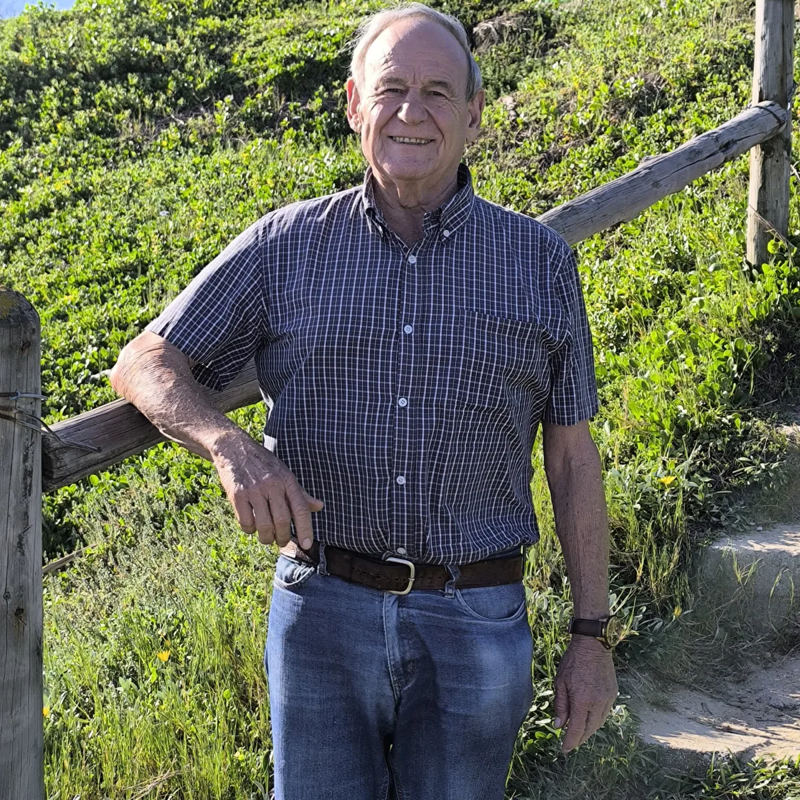
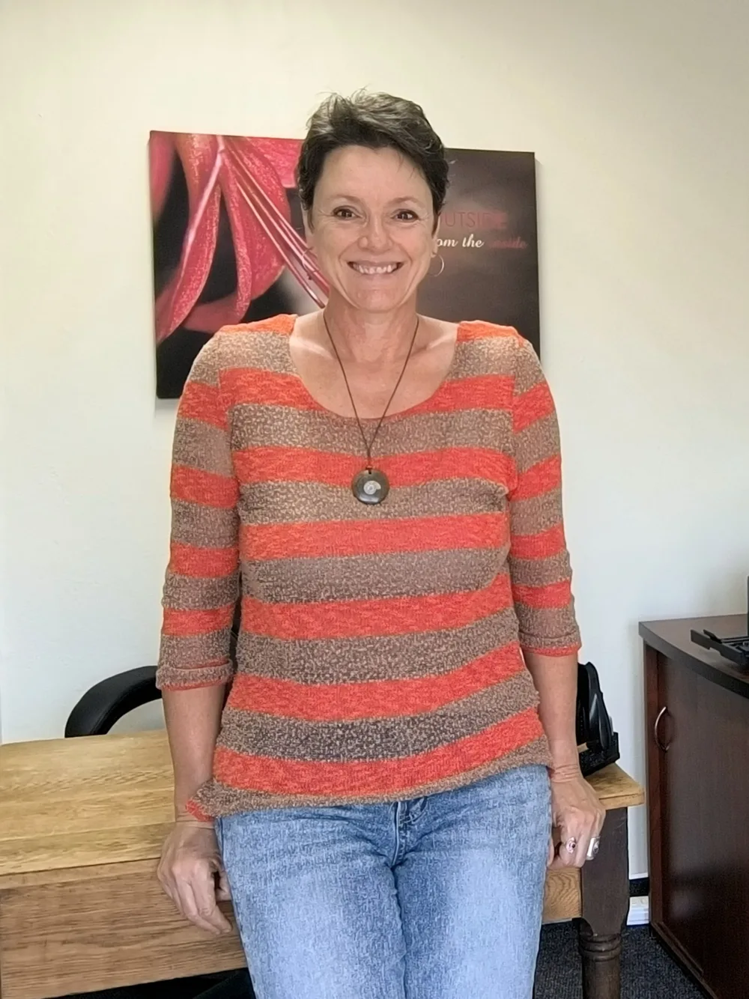

"The earth has given us everything we need. The art is in knowing how to use it."
— Dr. Bernard Lurie, N.D.
Hot flushes, mood swings, sleepless nights, the fog, the weight — none of it is inevitable. It's addressable. And you deserve answers that actually work.
Book Your Online Consultation →You're hormonally imbalanced — and nobody's looked at the full picture.
"My blood tests came back normal."
Normal compared to what? A single test on a single day tells your doctor almost nothing. Your hormones shift dramatically across a 28-day cycle. One snapshot — taken on the wrong day — looks completely different from a test taken two weeks later. A moving target is being treated as a fixed fact.
"I've been on HRT and I'm getting worse."
That's not surprising. Most HRT adds more estrogen to a body that's already estrogen-saturated. Environmental chemicals in plastics, pesticides, and food packaging have been flooding your system with estrogen-mimicking compounds for decades. More estrogen isn't the answer. It may be the problem.
"I've been told it's stress. Or anxiety. Or just aging."
Some of those symptoms — the mood swings, the brain fog, the crashes, the sleeplessness — have a hormonal explanation that never got explored. The symptoms of hormonal imbalance and the symptoms of anxiety look identical on paper. One has a root cause that can be addressed.
"I'm managing. But I'm not well."
Managing isn't healing. If you've adjusted your life around symptoms you were told are just part of being a woman, you've been given an answer that stopped the conversation too early.
There's a reason you haven't gotten better. It's not your body failing.
The full picture was never looked at.
You've been asking the right questions. Let's find the answers.
Book Your Consultation →Not a suppression of symptoms. A restoration of you.
Progesterone (the relaxing hormone) is one of the body's primary sleep regulators. When it's balanced, sleep returns on its own.
Hormonal balance supports neurotransmitter function. The fog lifts. You think clearly again.
These aren't personality traits. They're symptoms. And symptoms with a hormonal root can be resolved.
Natural herbal protocols address the underlying deficiency — not just the sensation.
When your hormones, thyroid, and adrenals work together as designed, energy stops being something you ration.
Hormonal imbalance is a primary driver of stubborn weight gain. When the root cause is corrected, the body's metabolism begins to respond.
Most women with hormonal imbalances have been given the wrong answer — often because they were asked the wrong question.
Exposure to xenoestrogens in plastics (BPA), pesticides, and personal care products can mimic natural hormones. Many women are estrogen‑saturated long before their symptoms begin.
High sugar intake and sedentary habits lead to insulin resistance, which is a primary driver of conditions like PCOS (polycystic ovary syndrome). If blood sugar isn't managed, hormonal treatments often fail.
Most growth hormone production and hormonal resetting happens during deep sleep. Missing just one hour can lower insulin sensitivity and disrupt the balance of hunger and stress hormones.
Your hormones shift hourly to daily across a 28‑day cycle. A test on the wrong day produces the wrong results — leading to the wrong treatment.
For women, body changes at 40 originate from fluctuating hormone levels, and may include weight gain, muscle loss, dry skin, thinning hair, sleep issues, and brain fog — as well as decreased libido, mood swings, hot flashes, and irregular periods.
Stress disrupts hormonal balance and affects ovulation. Elevated cortisol lowers estrogen and progesterone levels from the ovary. No supplement can fix this if the underlying stress load isn't addressed.
Now that you know what's actually going on — the next step is doing something about it.
Book Your Consultation →Before any remedy is prescribed, we take the time to understand what you're actually dealing with. Not just a symptom list — the full picture of what's been happening in your body and your life.
Before anything is prescribed, Dr. Lurie wants to understand what has actually been happening — how long, how it started, what makes it worse. Your diet, your environment, your stress. What your body has been dealing with well before it started showing up as symptoms.
Balancing herbs don't force the body in one direction. They restore the body's own feedback mechanisms so it can regulate itself correctly — from within. Many formulations are prepared in our own clinical facility, timed specifically to your hormonal cycle where needed.
Hormonal healing takes months, not weeks. As your body relearns how to regulate itself, your transformation is adjusted accordingly. Most patients notice meaningful improvement within 2 weeks, with significant change within 3–6 months.
Unlike generic health supplements, many of the formulations Dr. Lurie prescribes are manufactured in his own clinical facility — ensuring precise potency, exceptional purity, and the therapeutic quality your body deserves. Each remedy is chosen and prepared specifically for you, not mass-produced for the shelf.
Seven years of thyroid medication that never quite worked. Dr. Lurie's transformation addressed what was missing, not just what was measurable. Within four months, my energy returned the way it hadn't since my thirties.
I was told PCOS meant infertility. Dr. Lurie helped me understand what was truly happening in my body. With dietary changes and his custom formulations, I conceived naturally at 38. I don't have words for what that means.
The brain fog, the 3am wake-ups drenched in sweat, the complete loss of myself. Six months with Dr. Lurie's transformation and I feel better than I did at forty. I just wish I'd found this twenty years earlier.
Stories reflect individual experiences. Results vary. All transformations are undertaken under qualified natural health practitioner supervision.
Herbernie International is built on over four decades of clinical experience and a shared conviction: the body's capacity to heal is extraordinary — it simply needs the right support. Dr. Lurie and Jo-anne work together to ensure every patient receives care that is genuinely individual, thorough, and grounded in natural medicine.

Bernard Lurie has spent more than four decades working at the frontier of natural medicine. As founder of Herbernie International in Port Elizabeth, he has treated thousands of patients across South Africa — integrating herbal medicine, naturopathy, iridology, and osteopathy into a model of care that addresses root causes, not symptoms. His work is guided by a conviction held for over forty years: the body knows how to heal. The practitioner's role is to give it what healing requires.

Jo-anne is a registered natural health practitioner specialising in herbal medicine and clinical nutrition. Over seven years working alongside Dr. Lurie, she has developed deep expertise in hormonal assessment, treatment planning, and long-term health optimisation. Her approach is patient-centred and practical — rooted in the same philosophy that drives the practice: understand the full picture first, then build a plan that actually works. She is also the co-founder of Soul Essentials, a natural beauty and wellness range for women.
I have never seen a body that didn't want to heal. What I've seen is bodies that haven't been given what healing requires — the right nourishment, the right environment, and the right support. That is what we provide.
In a one-on-one online consultation, we will map your complete hormonal cycle and build a treatment plan designed entirely around you — your personal path to lasting balance and healing.
Fill in your details and Dr. Lurie's team will reach out within 24 hours to schedule your appointment.
This consultation is for educational and clinical guidance purposes. Dr. Lurie will recommend natural health transformations under qualified practitioner supervision. Not a substitute for emergency or acute medical care.